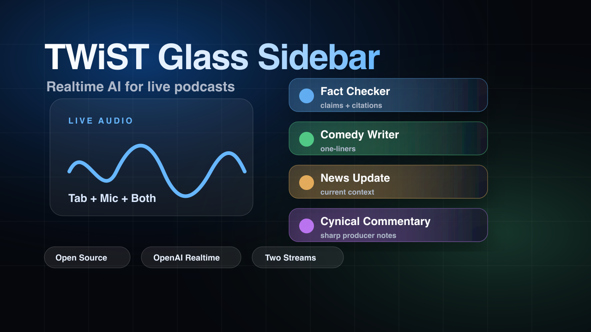

Fact-checker
Flags factual claims, adds context, and gives producers something verifiable before the moment passes.
A real-time intelligence layer that listens to a show, writes useful sidebar cards, finds clip moments, and gives producers a second stream ready for publishing.
Product Surface
Capture a podcast tab, watch the transcript build, and let the writer's room produce fact checks, jokes, news angles, and sharper commentary while the show is still happening.
Flag the claim before it becomes the show's accepted version.
One short tag appears while the hosts keep talking.
The guest claims real-time podcast feedback changes how producers cut clips.
New fact check, news angle, joke, and cynical producer note are routed.
Writers' Room
Each persona has its own job, color, prompt, confidence, and source trail. Toggle them, rewrite them, or route them through your preferred model provider.
Flags factual claims, adds context, and gives producers something verifiable before the moment passes.
Turns the current topic into a short tag, joke, or punchline without hijacking the show.
Surfaces timely headlines and citations connected to the discussion, ready for on-air context.
Adds the skeptical producer note: sharp, useful, and safe enough to keep in the room.
Live Pipeline
The whole path is designed for a fast demo: tab audio, realtime transcription, model routing, persona cards, clips, and storage handoff.
Tab, mic, or both with browser permission flow.
OpenAI Realtime WebRTC keeps the window fresh.
OpenAI, Claude, OpenRouter, or local gateway.
Persona prompts produce useful structured cards.
Find short moments with Remotion-ready props.
Save transcript, cards, and memory on your terms.
Agent Ready
The app exposes the transcript, cards, prompt memory, clip manifest, and project context so downstream agents can act instead of just observe.
Demo Video

Full bounty demo walkthroughOpen source, Realtime, personas, clips, and two streamsShip It
Or go straight to GitHub and run the setup script locally.